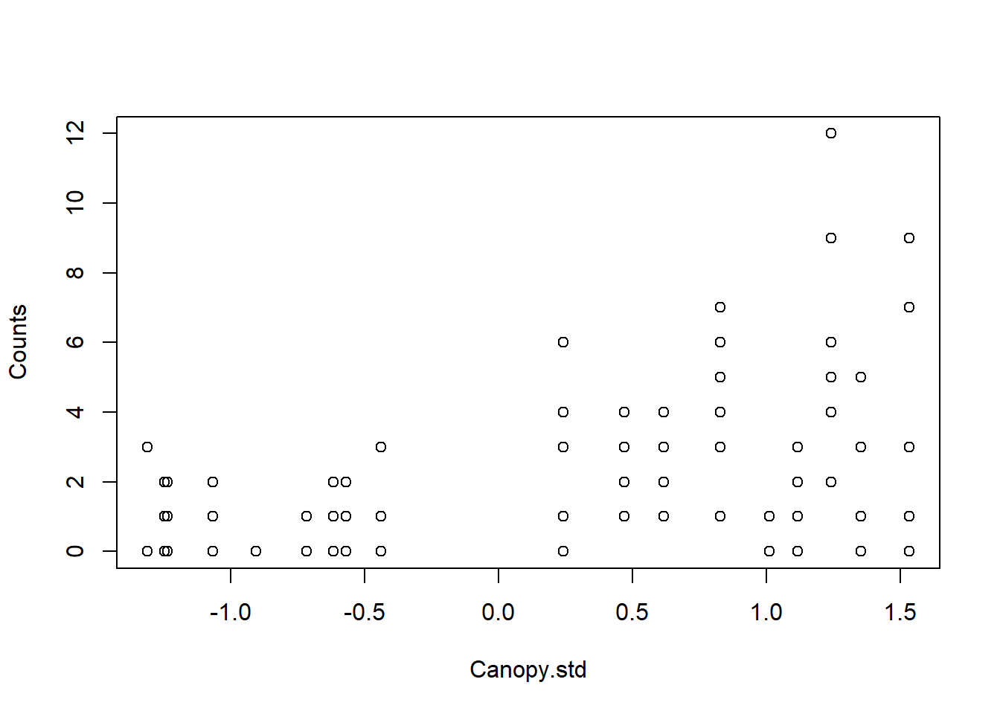
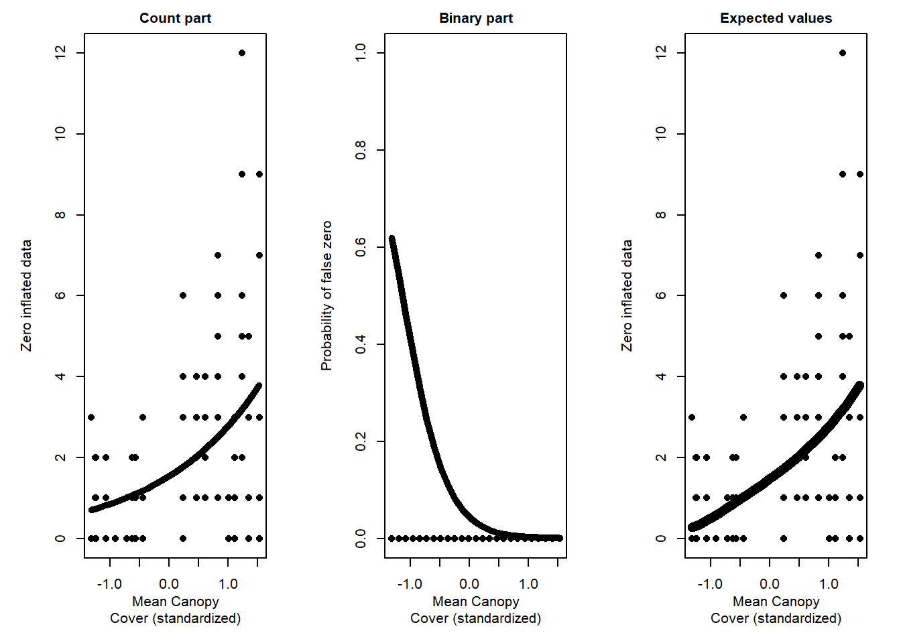

Assigned Reading:
Chapter 11 from: Zuur, A. F., Ieno, E. N., Walker, N., Saveliev, A. A. and Smith, G. M. 2009. Mixed Effects Models and Extensions in Ecology with R. Springer. link
When the number of zeros is so large that the data do not readily fit standard distributions (e.g. normal, Poisson, binomial, negative-binomial and beta), the data set is referred to as zero inflated (Heilbron 1994; Tu 2002).
The source of the zeroes matters: Non-detection (false zeros) or true zeroes?
e.g., Number of days that road-kills remain on the road
Poisson and NB models can be adjusted to exclude the probability that yi = 0 (equation 11.8 on p. 265).
family = pospoisson and family = posnegbinomial in VGAM package
How to detect zero-inflation: Frequency plot to know how many zeroes we would expect
Zero-inflation can cause overdispersion (but accounting for zero-inflation does not necessarily remove overdispersion).
Two-part and mixture models for zero-inflated data (Table 11.1).
Fundamental difference: In two-part models, the count process cannot produce zeros (the distribution is zero-truncated). In mixture models, it can.
In other words, two-part models do not distinguish true and false zeros (Fig 11.4), whereas mixture models do, at least statistically (Fig 11.5).
Source of zeroes is NOT considered
First step: zero or nonzero? Binomial model used to model probability of zeroes
Second step: zero-truncated model used to model the count data
Can do this separately (two models) or combine to use one model (hurdle() in pscl package)
Zeroes are modeled explicitly as coming from multiple processes: true zeroes and false zeroes are modeled as being generated from different processes
zeroinfl() in pscl package
Choose model type
Prune variables (drop1())
Model validation (extract residuals and plot vs. all predictors or measured variables)
Model interpretation
# Read in OBFL data
OBFL <- read.csv('./data/OBFL.csv',
header = T)
############################################################
library(lattice)
library(MASS)
require(pscl) # alternatively can use package ZIM for zero-inflated models
library(lmtest)Data includes counts of ochre-bellied flycatcher (OBFL) captures across deforestation and agricultural intensification gradient in southern Costa Rica. Specifically, sampling date, Counts (number of captures at site on a given day), Site Code and standardized mean canopy cover at the site (Canopy.std).
Here we will be looking at the relationship between number of captured individuals and canopy cover using a series of GLMs to deal with overdispersion. In reality we could use a GLMM with this data, but we will stick with GLMs for simplicity.
The steps and code use for these anlyses pull from heavily from:
1. Zuur, A. F., Ieno, E. N., Walker, N., Saveliev, A. A. and Smith, G. M. 2009. Mixed Effects Models and Extensions in Ecology with R.
2. Zuur, A. F. and Ieno, E. N. 2016. Beginner’s Guide to Zero-Inflated Models with R.

Let’s do a quick check for Zero-Inflation in the data
100*sum(OBFL$Counts == 0)/nrow(OBFL)## [1] 40.36697That’s pretty high! ~ 40% of our data are zeros
While our data seems to be zero-inflated, this doesn’t necessarily mean we need to use a zero-inflated model. In many cases, the covariates may predict the zeros under a Poisson or Negative Binomial model. So let’s start with the simplest model, a Poisson GLM.
\(Counts_i \sim Poisson(\mu_i)\)
\(E(Counts_i) = \mu_i\)
\(var(Counts_i) = \mu_i\)
\(log(\mu_i) = \alpha + \beta_1 * Canopy.std_i\)
## Poisson GLM
M1 <- glm(Counts ~ Canopy.std,
family = 'poisson',
data = OBFL)
summary(M1)##
## Call:
## glm(formula = Counts ~ Canopy.std, family = "poisson", data = OBFL)
##
## Deviance Residuals:
## Min 1Q Median 3Q Max
## -2.8609 -1.1927 -0.9465 0.6633 3.7112
##
## Coefficients:
## Estimate Std. Error z value Pr(>|z|)
## (Intercept) 0.21602 0.09701 2.227 0.026 *
## Canopy.std 0.77757 0.08953 8.685 <2e-16 ***
## ---
## Signif. codes: 0 '***' 0.001 '**' 0.01 '*' 0.05 '.' 0.1 ' ' 1
##
## (Dispersion parameter for poisson family taken to be 1)
##
## Null deviance: 286.66 on 108 degrees of freedom
## Residual deviance: 195.32 on 107 degrees of freedom
## AIC: 373.4
##
## Number of Fisher Scoring iterations: 5## Check for over/underdispersion in the model
E2 <- resid(M1, type = "pearson")
N <- nrow(OBFL)
p <- length(coef(M1))
sum(E2^2) / (N - p)## [1] 1.809869Looks like our model produces overdisperion. There are many reasons why this might be the case, but for now we are going to try to use a negative binomial GLM using the ‘glm.nb’ function in the ‘MASS’ package
\(Counts_i \sim NB(\mu_i, theta)\)
\(E(Counts_i) = \mu_i\)
\(var(Counts_i) = (\mu_i + \mu_i^{2})/theta\)
\(log(\mu_i) = \alpha + \beta_1 * Canopy.std_i\)
M2 <- glm.nb(Counts ~ Canopy.std,
data = OBFL)
summary(M2)##
## Call:
## glm.nb(formula = Counts ~ Canopy.std, data = OBFL, init.theta = 1.864363167,
## link = log)
##
## Deviance Residuals:
## Min 1Q Median 3Q Max
## -2.1169 -1.0006 -0.7327 0.4588 2.1316
##
## Coefficients:
## Estimate Std. Error z value Pr(>|z|)
## (Intercept) 0.1952 0.1223 1.597 0.11
## Canopy.std 0.8290 0.1194 6.945 3.78e-12 ***
## ---
## Signif. codes: 0 '***' 0.001 '**' 0.01 '*' 0.05 '.' 0.1 ' ' 1
##
## (Dispersion parameter for Negative Binomial(1.8644) family taken to be 1)
##
## Null deviance: 162.32 on 108 degrees of freedom
## Residual deviance: 109.99 on 107 degrees of freedom
## AIC: 346.13
##
## Number of Fisher Scoring iterations: 1
##
##
## Theta: 1.864
## Std. Err.: 0.610
##
## 2 x log-likelihood: -340.135# Dispersion statistic
E2 <- resid(M2, type = "pearson")
N <- nrow(OBFL)
p <- length(coef(M2)) + 1 # '+1' is for variance parameter in NB
sum(E2^2) / (N - p)## [1] 0.9773875Looks like the Negative Binomial GLM resulted in some minor underdispersion. In some cases, this might be OK. But in reality, we want to avoid both under- and overdispersion.
Overdispersion can bias parameter estimates and produce false significant relationships. On the otherhand, underdisperion can mask truly significant relationships. So let’s try to avoid all of this.
\(Counts_i \sim ZIP(\mu_i, \pi_i)\)
\(E(Counts_i) = \mu_i * (1-\pi_i)\)
\(var(Counts_i) = (1-\pi_i) * (\mu_i + \pi_i * \mu_i^{2})\)
\(log(\mu_i) = \beta_1 + \beta_2 * Canopy.std\)
\(log(\pi_i) = \gamma_1 + \gamma_2 * Canopy.std\)
In zero-inflated models, it is possible to choose different predictors for the counts and for the zero-inflation. You might expect different variables to be driving presence/absence vs. total number of individuals. We will keep it simple and use the same covariate in both parts.
M3 <- zeroinfl(Counts ~ Canopy.std | ## Predictor for the Poisson process
Canopy.std, ## Predictor for the Bernoulli process;
dist = 'poisson',
data = OBFL)
summary(M3)##
## Call:
## zeroinfl(formula = Counts ~ Canopy.std | Canopy.std, data = OBFL,
## dist = "poisson")
##
## Pearson residuals:
## Min 1Q Median 3Q Max
## -1.7794 -0.6838 -0.4998 0.6525 4.1540
##
## Count model coefficients (poisson with log link):
## Estimate Std. Error z value Pr(>|z|)
## (Intercept) 0.5515 0.1440 3.830 0.000128 ***
## Canopy.std 0.5951 0.1443 4.123 3.73e-05 ***
##
## Zero-inflation model coefficients (binomial with logit link):
## Estimate Std. Error z value Pr(>|z|)
## (Intercept) -1.1273 0.3643 -3.094 0.00197 **
## Canopy.std -1.0102 0.4406 -2.293 0.02185 *
## ---
## Signif. codes: 0 '***' 0.001 '**' 0.01 '*' 0.05 '.' 0.1 ' ' 1
##
## Number of iterations in BFGS optimization: 11
## Log-likelihood: -177.1 on 4 Df# Dispersion statistic
E2 <- resid(M3, type = "pearson")
N <- nrow(OBFL)
p <- length(coef(M3))
sum(E2^2) / (N - p)## [1] 1.368017Still a some overdispersion in the ZIP. Let’s try a ZINB
\(Counts_i \sim ZINB(\mu_i, \pi_i)\) Not actually sure how to formulate this part for ZINB??
\(E(Counts_i) = \mu_i * (1-\pi_i)\)
\(var(Counts_i) = (1-\pi_i) * (\mu_i + \pi_i^{2}/k) + \mu_i^{2} * (\pi_i^{2} + \pi_i)\)
\(log(\mu_i) = \beta_1 + \beta_2 * Canopy.std\)
\(log(\pi_i) = \gamma_1 + \gamma_2 * Canopy.std\)
M4 <- zeroinfl(Counts ~ Canopy.std |
Canopy.std,
dist = 'negbin',
data = OBFL)
summary(M4)##
## Call:
## zeroinfl(formula = Counts ~ Canopy.std | Canopy.std, data = OBFL,
## dist = "negbin")
##
## Pearson residuals:
## Min 1Q Median 3Q Max
## -1.1964 -0.6732 -0.4155 0.5077 3.9661
##
## Count model coefficients (negbin with log link):
## Estimate Std. Error z value Pr(>|z|)
## (Intercept) 0.4323 0.1737 2.489 0.01280 *
## Canopy.std 0.5892 0.1710 3.446 0.00057 ***
## Log(theta) 0.8332 0.3672 2.269 0.02326 *
##
## Zero-inflation model coefficients (binomial with logit link):
## Estimate Std. Error z value Pr(>|z|)
## (Intercept) -3.082 1.481 -2.081 0.0374 *
## Canopy.std -2.725 1.238 -2.201 0.0278 *
## ---
## Signif. codes: 0 '***' 0.001 '**' 0.01 '*' 0.05 '.' 0.1 ' ' 1
##
## Theta = 2.3008
## Number of iterations in BFGS optimization: 18
## Log-likelihood: -168.4 on 5 Df# Dispersion Statistic
E2 <- resid(M4, type = "pearson")
N <- nrow(OBFL)
p <- length(coef(M4)) + 1 # '+1' is due to theta
sum(E2^2) / (N - p)## [1] 0.992081This is really close to 1, which looks great.
We can compare the two zero-inflated models using the Likelihood ratio test
lrtest(M3, M4)## Likelihood ratio test
##
## Model 1: Counts ~ Canopy.std | Canopy.std
## Model 2: Counts ~ Canopy.std | Canopy.std
## #Df LogLik Df Chisq Pr(>Chisq)
## 1 4 -177.14
## 2 5 -168.37 1 17.538 2.816e-05 ***
## ---
## Signif. codes: 0 '***' 0.001 '**' 0.01 '*' 0.05 '.' 0.1 ' ' 1Results show that the second model- the ZINB- is the best choice. So let’s stick with this model and plot the results
